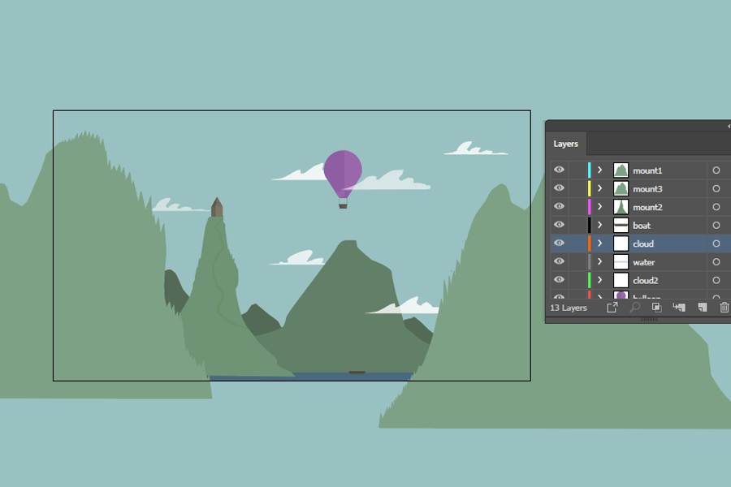
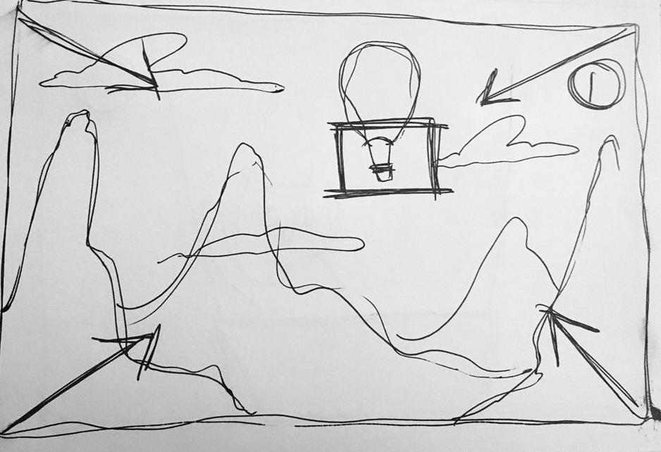
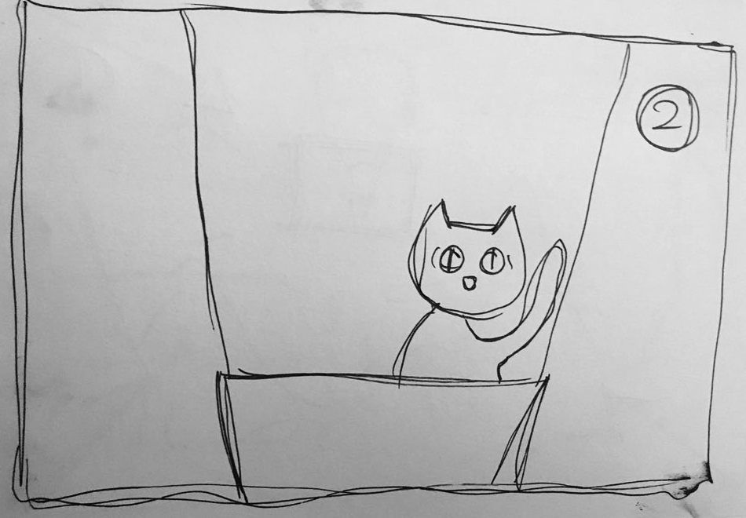

Contact me
Click here to send me an email.
This is a quick look into what can be done when playing with 3D layers in After Effects. The same effect can be done when producing parallax videos to showcase a website’s tasks and general UI animations.
Everything was created in Illustrator first, and imported into After Effects to be animated using its different layers, later giving it depth.
These are the sketches (or in this case, a simple storyboard).
 Click here to send me an email.